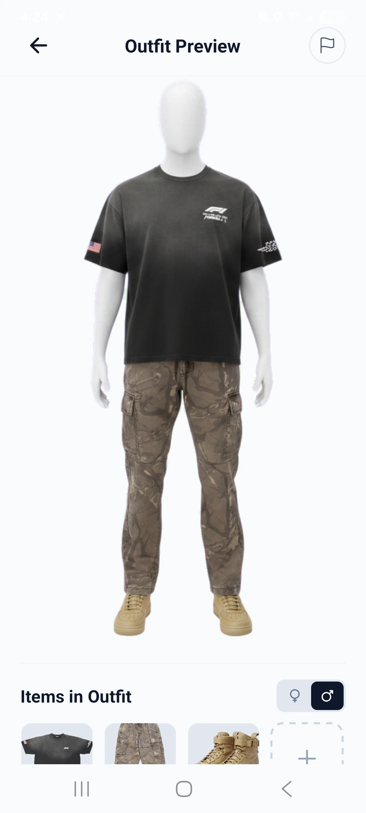
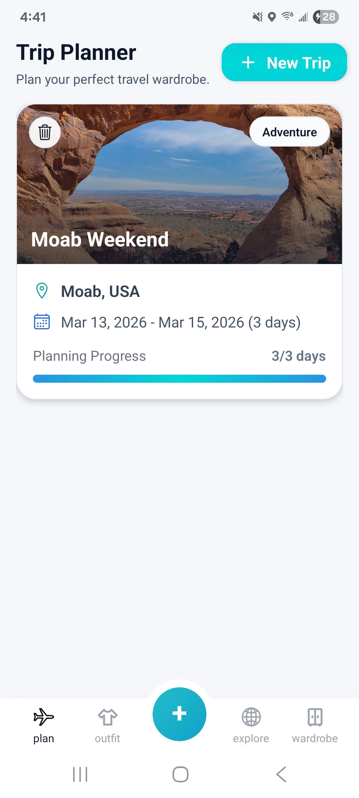
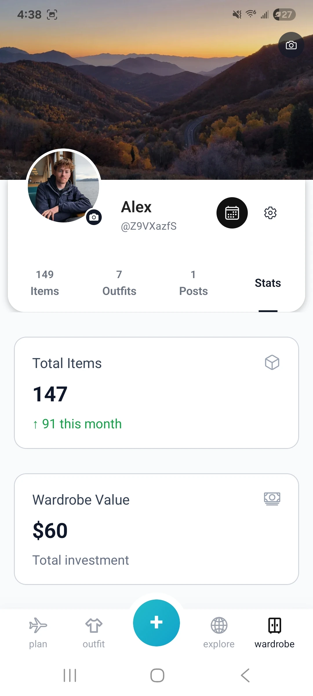

Upload

Digitize your closet.
service :
started :
completed :
StyleStreak started with a problem I kept seeing in real life: people own plenty of clothes, but still feel like they have nothing to wear. I came up with an app that turns the closet into something organized and useful, so users can build outfits, plan for trips, track what they wear, and get AI-powered suggestions using the clothing they already own.
visit stylestreak.fashionStyleStreak won first place across Computer Science, Data Science, and Software Development capstone projects, evaluated by industry judges.
Swipe through the core flow first, then keep going deeper into social inspiration, borrowing, wear tracking, and wardrobe stats further down the page.
Digitize your closet.

See your whole closet in one place.

Build exciting new outfits.

Pack smarter for every trip.
I wanted wardrobe digitization to lead to real daily value: faster outfit decisions, smarter packing, and better awareness of what clothes actually get worn instead of another catalog users forget to open.
I originated the product, recruited the four-person team, led planning and product direction, drove major architecture decisions, reviewed code, and contributed roughly 70 percent of the current codebase.
StyleStreak was built with a talented capstone team whose work made the product stronger. I was the primary technical and product driver, taking the idea through architecture, implementation, polish, testing, and Demo Day delivery.
My work covered much of the app's foundation and its most ambitious flows: Firebase data and core APIs, the Dress Me outfit-generation experience, closet intake, wardrobe search/filter/sort, saving items and outfits, and the full trip planner with itinerary parsing, weather-aware daily planning, and packing progress. I also owned major Cloud Functions and OpenAI integration work, production YOLO/CLIP and image-generation reliability improvements, security hardening, testing and CI/CD, and the public StyleStreak website.
That breadth is what made StyleStreak exciting for me. It let me combine product thinking, mobile design, full-stack development, practical AI integration, and team leadership in one app people actually use everyday.


